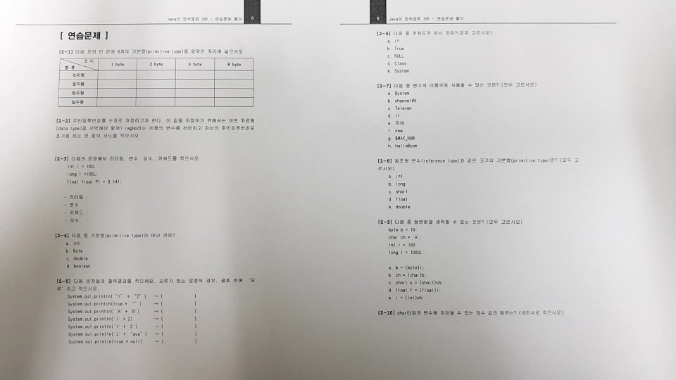

데이터타입 변수 에서
1) 데이터타입을 정하지 않는것 '김치'를 줘놓고 김치통이 없는경우
2) 변수를 정하지 않는 것 '김치통'을 줘놓궈 뭘 담을지 정하지 않는 것
*노란색 : 중요
| 1byte | 2byte | 4byte | 8byte | |
|---|---|---|---|---|
| 논리형 | boolean | |||
| 문자 | char | |||
| 정수 | byte | short | int | long |
| 실수 | float | double | ||
| 범위 | |
|---|---|
| byte형 | -2^7 ~ 2^7 -1 / -128 ~ 127 |
| short형 | -2^15 ~ 2^15 -1 / -32768 ~ 32767 |
| int형 | -2^31 ~ 2^31 -1 / -21억 ~ 21억사이 |
| long형 | - 2^63 ~ 2^63 -1 / 그냥 대충 22억 넘으면 L 붙여라 |
 연습문제 풀수있는것만 풀기